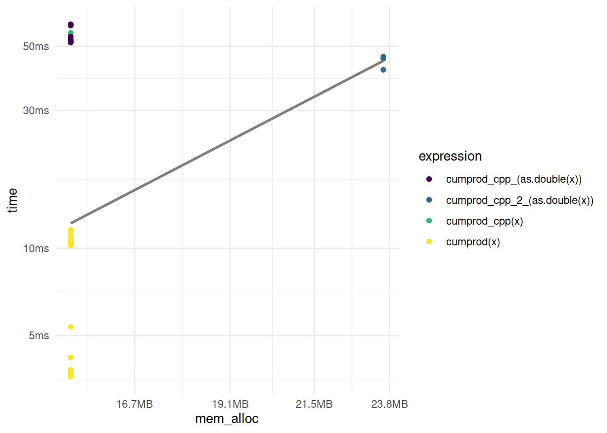
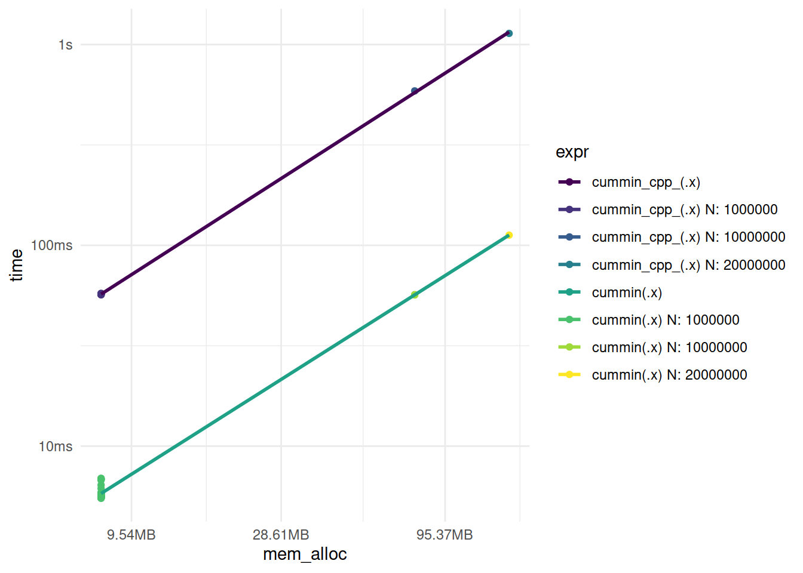

To be able to create writable vectors, I need to append this below the namespace declaration (i.e., using namespace cpp11).
namespace writable = cpp11::writable;
This function returns the cumulative sum of the elements of a vector.
[[cpp11::register]] doubles cumsum_cpp_(doubles x){int n = x.size(); writable::doubles out(n); out[0]= x[0];for(int i =1; i < n;++i){ out[i]= out[i -1]+ x[i];}return out;}
The R equivalent is the following.
#' Return the cumulative sum of the coordinates of a vector (R)#' @param x numeric vector#' @exportcumsum_r <-function(x) { n <-length(x) out <-numeric(n) out[1] <- x[1]for (i in2:n) { out[i] <- out[i -1] + x[i] } out}
I also need to add the corresponding auxiliary function for the documentation.
#' Return the cumulative sum of the coordinates of a vector (C++)#' @inheritParams cumsum_r#' @exportcumsum_cpp <-function(x) {cumsum_cpp_(as.double(x))}
A benchmark of the two functions is the following.
My C++ function is in the middle between R’s cumsum() and my R function cumsum_r().
Cumulative product (cumprod())
In R we can use cumprod() to compute the cumulative product of a vector.
cumprod(1:5)
[1] 1 2 6 24 120
The C++ implementation can use the shortcuts from the previous part.
[[cpp11::register]] cpp11::doubles cumprod_cpp_(cpp11::doubles x){int n = x.size(); writable::doubles out(n); out[0]= x[0];for(int i =1; i < n;++i){ out[i]= out[i -1]* x[i];}return out;}
Test correctness.
load_all()cumprod(1:5)
[1] 1 2 6 24 120
cumprod_cpp_(1:5)
Error: Invalid input type, expected 'double' actual 'integer'
I need an auxiliary function to cast the input as double.
#' Return the cumulative product of the coordinates of a vector (C++)#' @param x numeric vector#' @exportcumprod_cpp <-function(x) {cumprod_cpp_(as.double(x))}
Now I can test the correctness of the function again.
load_all()cumprod(1:5)
[1] 1 2 6 24 120
cumprod_cpp(1:5)
[1] 1 2 6 24 120
Benchmark.
set.seed(123) # set the seed for reproducibilityx <-rpois(1e6, lambda =2) # 1,000,000 elementsmark(cumprod(x),cumprod_cpp(x))
One remedial solution is not to define the length of the vector and add one coordinate on each step.
[[cpp11::register]] cpp11::doubles cumprod_cpp_2_(cpp11::doubles x){int n = x.size(); writable::doubles out; out.push_back(x[0]);for(int i =1; i < n;++i){ out.push_back(out[i -1]* x[i]);}return out;}
Benchmark.
load_all()set.seed(123) # set the seed for reproducibilityx <-rpois(1e6, lambda =2) # 1,000,000 elementslibrary(ggplot2)library(dplyr)library(tidyr)results <-mark(cumprod(x),cumprod_cpp(x),cumprod_cpp_(as.double(x)),cumprod_cpp_2_(as.double(x)))results %>%unnest(c(time, mem_alloc, gc)) %>%select(expression, time, mem_alloc, gc) %>%filter(gc =="none") %>%ggplot(aes(x = mem_alloc, y = time, color = expression)) +geom_point() +scale_color_viridis_d() +geom_smooth(method ="lm", se = F, colour ="grey50") +theme_minimal()

cumprod_cpp_2_ is faster than cumprod_cpp_ but still slower than base R, and it uses more memory than any of the compared function calls.
Cumulative minimum (cummin())
Let’s look at this example from R’s documentation.
c(3:1, 2:0, 4:2)
[1] 3 2 1 2 1 0 4 3 2
cummin(c(3:1, 2:0, 4:2))
[1] 3 2 1 1 1 0 0 0 0
The function starts with the first element and then it compares the next element with the current minimum and keeps the smallest value. In this case, when it reaches zero, the next values in the sequence are zeroes because there are no negative values in the original vector.
The lesson from the previous part is to avoid growing vectors, it uses more memory.
The C++ implementation can use the learning from the previous parts.
[[cpp11::register]] cpp11::doubles cummin_cpp_(cpp11::doubles x){int n = x.size(); writable::doubles out(n); out[0]= x[0];for(int i =1; i < n;++i){// error: taking address of rvalue [-fpermissive]// double* x1 = &out[i - 1];double x1 = out[i -1];// error: lvalue required as unary ‘&’ operand// double* x2 = &x[i];double x2 = x[i]; out[i]=std::min(x1, x2);}return out;}
Test correctness and benchmark.
load_all()cummin(c(3:1, 2:0, 4:2))
[1] 3 2 1 1 1 0 0 0 0
cummin_cpp_(as.double(c(3:1, 2:0, 4:2)))
[1] 3 2 1 1 1 0 0 0 0
# create random vectorsset.seed(123) # set the seed for reproducibilityx1 <-as.double(rpois(1e6, lambda =2))x2 <-as.double(rpois(10e6, lambda =2))x3 <-as.double(rpois(20e6, lambda =2))results <- purrr::map(list(x1, x2, x3),~mark(cummin(.x),cummin_cpp_(.x) ) %>%mutate(n =length(.x)))results %>%bind_rows() %>%unnest(c(time, mem_alloc, gc, n)) %>%select(expression, time, mem_alloc, gc, n) %>%filter(gc =="none") %>%mutate(expr =paste(expression, n, sep =" N: ")) %>%ggplot(aes(x = mem_alloc, y = time, color = expr)) +geom_point() +scale_color_viridis_d() +geom_smooth(aes(color = expression), method ="lm", se = F) +theme_minimal()

Cumulative maximum (cummax())
Analogous to the previous part.
[[cpp11::register]] cpp11::doubles cummax_cpp_(cpp11::doubles x){int n = x.size(); writable::doubles out(n); out[0]= x[0];for(int i =1; i < n;++i){// error: taking address of rvalue [-fpermissive]// double* x1 = &out[i - 1];double x1 = out[i -1];// error: lvalue required as unary ‘&’ operand// double* x2 = &x[i];double x2 = x[i]; out[i]=std::max(x1, x2);}return out;}
Test correctness and benchmark.
load_all()cummax(c(3:1, 2:0, 4:2))
[1] 3 3 3 3 3 3 4 4 4
cummax_cpp_(as.double(c(3:1, 2:0, 4:2)))
[1] 3 3 3 3 3 3 4 4 4
# create random vectorsset.seed(123) # set the seed for reproducibilityx1 <-as.double(rpois(1e6, lambda =2))x2 <-as.double(rpois(10e6, lambda =2))x3 <-as.double(rpois(20e6, lambda =2))results <- purrr::map(list(x1, x2, x3),~mark(cummax(.x),cummax_cpp_(.x) ) %>%mutate(n =length(.x)))results %>%bind_rows() %>%unnest(c(time, mem_alloc, gc, n)) %>%select(expression, time, mem_alloc, gc, n) %>%filter(gc =="none") %>%mutate(expr =paste(expression, n, sep =" N: ")) %>%ggplot(aes(x = mem_alloc, y = time, color = expr)) +geom_point() +scale_color_viridis_d() +geom_smooth(aes(color = expression), method ="lm", se = F) +theme_minimal()